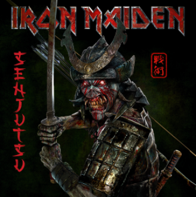
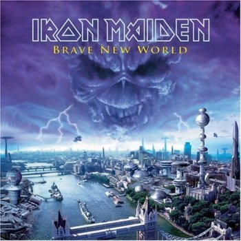
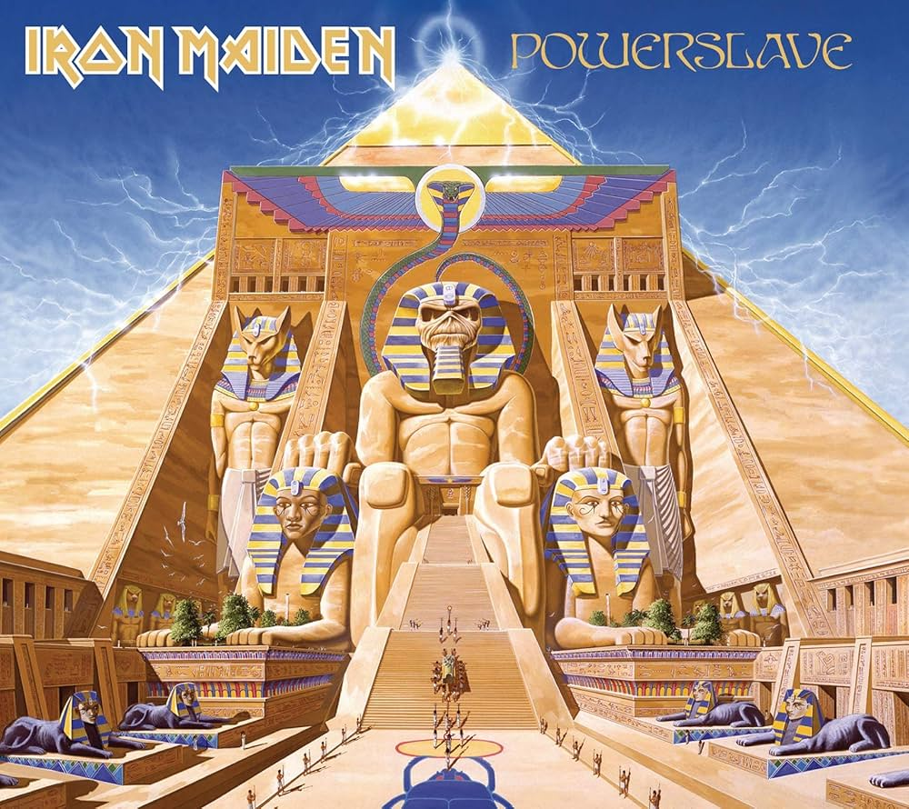
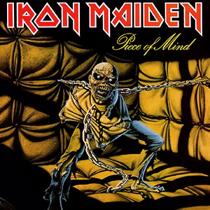
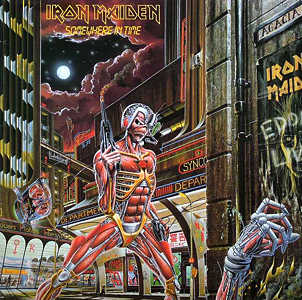
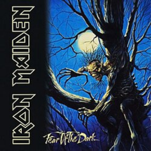
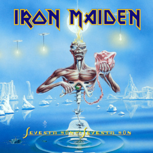

Senjutsu
2021

Brave New World
2000

Powerslave
1984

Piece of Mind
1983

The Number of The Beast
1982

Somewhere In Time
1986

Fear of The Dark
1992

Seventh Son of a Seventh Son
1988
Iron Maiden
Iron Maiden é uma das bandas mais importantes e influentes da história do heavy metal. Formada em Londres em 1975 pelo baixista Steve Harris, a banda ajudou a definir o som da New Wave of British Heavy Metal.
Conhecida pelas músicas rápidas, instrumentais marcantes e letras inspiradas em guerra, história, literatura e ficção, o Iron Maiden construiu uma identidade única dentro do rock mundial.
Ascensão
O sucesso internacional começou nos anos 80 com álbuns que se tornaram clássicos do metal, como "The Number of the Beast", "Powerslave" e "Piece of Mind".
A chegada do vocalista Bruce Dickinson trouxe ainda mais força para a banda, principalmente pela potência vocal e presença de palco.
Além da música, o Iron Maiden ficou famoso pelo mascote Eddie, presente em capas de discos, shows e materiais da banda.
Impacto
Iron Maiden ajudou a popularizar o heavy metal no mundo inteiro e influenciou gerações de bandas com seu estilo técnico e energético.
Entre os maiores sucessos da banda estão "Fear of the Dark", "The Trooper", "Run to the Hills" e "Hallowed Be Thy Name".
Mesmo após décadas de carreira, a banda continua lotando estádios e sendo considerada uma das maiores referências da história do metal.